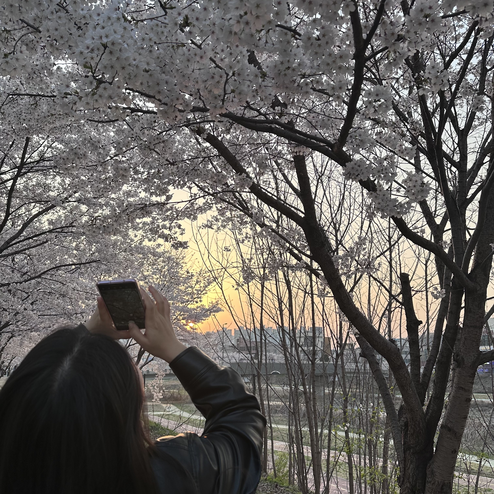

자신보다 타인의 사진을 찍어주는 것을 더 좋아하는 .
담고 싶은 풍경이 있다면 그 자리에 멈춰서는 .
그치만 친구들이나 가족과 찍는 네컷은 좋아하는 .

아마 중학생 시절, 아빠에게 그 당시 나쁘지 않았던 캐논 카메라를 받았었다.
놀러갈 때 마다 그 카메라를 들고다니면서 열심히 사진작가의 역할을 했었던 것 같다.
사진을 처음 찍게된 건 아마 그 때부터였던 것 같다.
10년도 더 된 일이라 그 때의 나는 어땠는지 기억이 안나지만 열심히 가족의 모습과 풍경들을 담았던 것 같다.
아쉽게도, 현재 그 캐논 카메라의 행방은 모른다.
가족들의 추억이 남아있는 그 카메라에 담긴 것들을 다시 보고싶을 때가 있기도 하다.